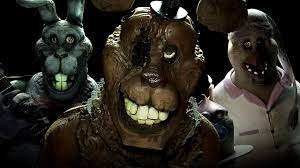
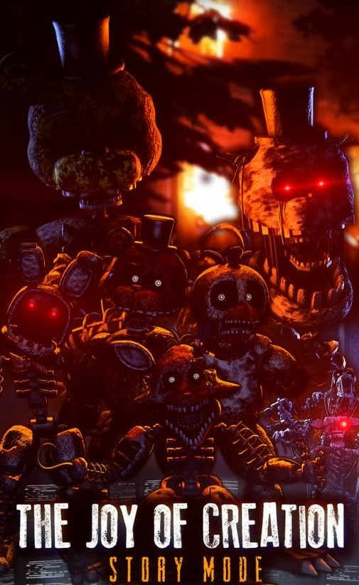
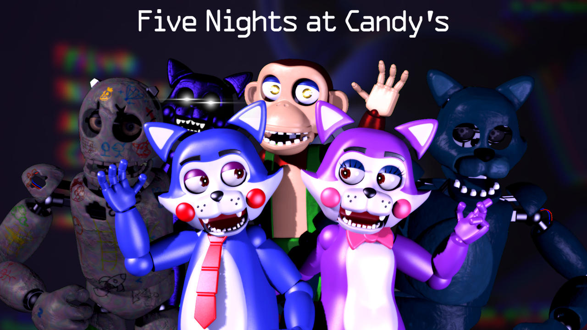

JR's est un jeu indépendant de type point-and-click, inspiré de la franchise Five Nights at Freddy's de Scott Cawthon. Initialement dirigé par Ramenov, le jeu a connu un grand succès à sa sortie en raison de ses modèles de haute qualité, de ses atmosphères immersives et de son système de nuit basé sur des tâches stimulant.
Cependant, le développement a connu un obstacle majeur lorsque Ramenov a été impliqué dans des activités illicites avec le groupe The Pear, entraînant son retrait du projet. Darroc a ensuite pris le contrôle exclusif du développement et a mené le jeu jusqu'à sa sortie.
L'intrigue met en scène un enquêteur paranormal anonyme qui s'associe avec la vie et la mort pour enquêter sur JR's. Guidé par un esprit nommé Paulbear, le joueur doit exposer la force malveillante cachée dans les costumes d'animatroniques hantés.
Le jeu a été un tel succès qu'une extension très attendue, intitulée "JR's Enter the Flipside", a été annoncée. Cette extension élargira les Barrens, un lieu crucial entre la vie et la mort, et permettra aux joueurs de rencontrer des esprits alternatifs avec des histoires uniques. Des teasers suggèrent également une exploration approfondie du passé énigmatique de Paulbear.

"The Joy of Creation" (TJoC) est un jeu vidéo d'horreur populaire créé par Nikson. Le jeu s'inspire de la série Five Nights at Freddy's (FNaF) et offre une expérience de jeu intense axée sur la survie et les moments effrayants. Dans TJoC, les joueurs évoluent à travers divers environnements, tels qu'une maison hantée et une pizzeria, tout en essayant d'éviter des personnages animatroniques qui prennent vie et tentent de les attraper. L'histoire du jeu se concentre sur le protagoniste, Scott Cawthon, le créateur de la série FNaF, alors qu'il vit une expérience terrifiante dans sa propre maison.
Le jeu a gagné en notoriété en raison de sa tension atmosphérique, de son gameplay exigeant et de sa capacité à offrir une expérience effrayante aux joueurs. L'intrigue tourne autour de l'univers des animatroniques, ces robots animés qui prennent vie de manière inquiétante. Les joueurs doivent utiliser leur ingéniosité pour échapper à ces créatures cauchemardesques tout en gérant leurs ressources limitées, ce qui crée une atmosphère de stress constant.
TJoC a été salué pour ses graphismes soignés et son design sonore immersif, contribuant à l'immersion des joueurs dans l'horreur du jeu. L'histoire complexe et les multiples niveaux de difficulté ajoutent à la rejouabilité du jeu, incitant les joueurs à affronter à plusieurs reprises les défis effrayants qui les attendent. En somme, "The Joy of Creation" s'est établi comme un jeu d'horreur captivant, attirant les amateurs du genre avec son mélange unique de suspense et de frayeur.

Five Nights at Candy's" est un jeu d'horreur indépendant créé par Emil "Ace" Macko. Le jeu s'inspire du concept populaire de "Five Nights at Freddy's" (FNAF) et offre une expérience similaire, mais avec ses propres éléments uniques. L'histoire se déroule dans une pizzeria fictive appelée "Candy's Burger and Fries", où des animatroniques, semblables à ceux de FNAF, deviennent actifs la nuit et présentent un comportement menaçant envers le gardien de sécurité.
Le joueur incarne le gardien de sécurité qui doit survivre à cinq nuits successives en surveillant les caméras de sécurité pour détecter les mouvements des animatroniques et en fermant les portes pour se protéger. Chaque nuit apporte son lot de défis croissants, avec l'introduction de nouveaux animatroniques et de mécanismes de jeu plus complexes.
L'intrigue se développe au fur et à mesure que le joueur progresse, révélant des éléments mystérieux et des origines sombres concernant Les Animatroniquesss et l'histoire de la pizzeria. Le jeu est salué pour son atmosphère angoissante, ses jump scares efficaces, et son approche unique du genre "horreur de survie". "Five Nights at Candy's" a gagné en popularité au sein de la communauté des fans de jeux d'horreur indépendants en offrant une expérience immersive et effrayante.